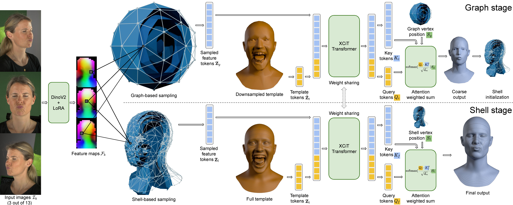
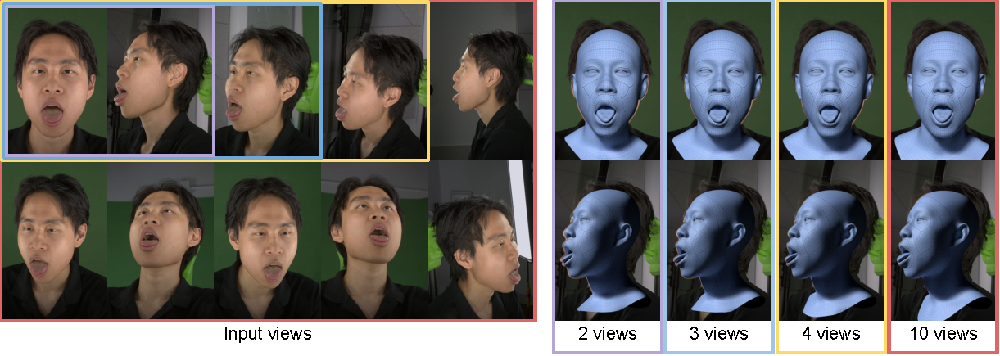

A shared DinoV2 backbone with LoRA adaptation extracts per-view feature maps from the input images (left). The graph stage (top) projectively samples features for a sparse graph and processes them alongside a downsampled tokenized template using an XCiT-based transformer. From the transformer output, a coarse mesh is regressed as an attention-weighted sum over the sampling graph coordinates. This coarse prediction is displaced along its normals to construct sampling shells for surface-aware feature sampling. Finally, the shared transformer aggregates these shell-based features with a full-resolution tokenized template to predict the high-fidelity mesh as an attention-weighted sum of dynamic shell coordinates (bottom).
SHELLS can be applied frame-by-frame to dynamic facial performances and produces temporally smooth and expressive performance registrations.
SHELLS handles occluded regions like the inner mouth cavity by correlating these with the visible areas to regress all vertices holistically.

Thanks to random camera dropout during training and mean-variance feature fusion, SHELLS is robust to the number of input views at inference time. Reconstructions remain plausible and detailed even with as few as two input views (featuring large disparities that challenge traditional MVS methods), and scale gracefully as more views (e.g., 3, 4, or 10) are added.
@inproceedings{Bolkart2026SHELLS,
author = {Bolkart, Timo and Wang, Daoye and Chandran, Prashanth},
title = {Topologically Consistent Multi-view 3D Head Reconstruction via Coarse-Guided Layered Surface Sampling},
year = {2026},
publisher = {Association for Computing Machinery},
keywords = {Registration, 3D Head Reconstruction},
series = {SIGGRAPH Conference Papers '26}
}